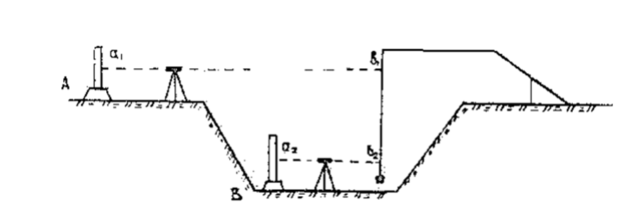
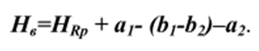

11-маруза Мавзу: Режалаш ишлари элементлари
Лойиҳада берилган бурчак, чизиқ ва баландликларни жойда геодезик ясашга режалаш ишлари
элементлари дейилади.
Режалаш ишларининг асосий элементлари бўлиб, жойда лойиҳавий бурчак ясаш, лойиҳавий
масофани
қўйиш, лойиҳавий отметкани жойга кўчириш, лойиҳавий чизиқ ва текисликни жойга кўчиришлар
ҳисобланади.
Лойиҳавий бурчак ясаш. Жойда лойиҳавий B, бурчакни ясаш учун
дастлабки берилган АВ томон билан (1 а-расм) шу л бурчак қийматини
ҳосил қилувчи йўналишни топиш керак.
1-расм. Лойиҳавий бурчак ясаш.
А нуқтага теодолит ўрнатилиб, в нуқтага визирланади ва горизонтал
доирадан в саноқ олинади, сўнгра C=в+в, саноқ ҳисобланади (агарда В. бурчак соат стрелкаси
йўналишига тескари ясалса, у ҳолда C =в -р.). Алидадани бўшатиб горизонтал доира саноғини С
га келтирамиз ва қараш трубасининг иплар тўри маркази бўйича С, нуқтани белгилаймиз. Худди
шу тарзда р. бурчакни вертикал доиранинг бошқа ҳолатида ясаймиз ва С, нуқтани белгилаймиз.
Агарда С, ва С, нуқталар устма – уст тушмаса СС, кесма тенг иккига бўлинади ва с нуқта
белгиланади. Бурчак ВАС лойиҳавий деб қабул қилинади.
Бурчак ясаш аниқлигига қуйидаги хатоликлар таъсир этади: визирлаш хатоси (mg); горизонтал
доирадан саноқ олиш хатоси (т.); теодолитни марказлаштириш хатоси (m,); редукция хатоси
(mp); С нуқтани белгилаш хатоси (ms).
Шундай қилиб, бурчак ясаш умумий хатолиги қуйидаги ифода орқали ҳисобланиши мумкин:
В, бурчакни тр=30” ўрта квадратик хатолик билан ясаш учун т 30 теодолитини қўллаш мумкин, С
нуқта эса қалам билан бетонга
белгиланади.
Агарда лойиҳавий бурчакни юқори аниқликда ясаш талаб этилса, у ҳолда топилган ВАС
бурчак бир
нечта приёмда ўлчанади ва унинг аниқроқ қиймати в ҳисобланади.
Лойиҳавий бурчак р, билан ўлчанган бурчак в фарқи ҳисобланиб Др тузатма топилади,
Лойиҳадан масофа АС=l ни билган ҳолда, тузатманинг чизиқли қиймати
CiCo=І ҳисобланади.
Жойда С нуқтадан АС томонга перпендикуляр ҳолатда l кесма ўлчанади ва Со нуқта
белгиланади.
Ҳосил бўлган бурчак ВАСо лойиҳавий бурчак B га тенг бўлади.
Текшириш учун бурчак ВАСо ўлчанади.
Юқоридаги ифодага асосан, лойиҳавий бурчакнинг чизиқли редукциясини аниқлаш хатолиги,
Лойиҳавий кесма ясаш. Жойда лойиҳавий кесма ясаш учун бошланғич А нуқтадан (19.2-расм)
берилган йўналиш бўйича пўлат ўлчагич асбоб (лента, рулетка) билан берилган лойиҳавий
узунликка тенг бўлган масофа қўйилади ва вақтинча жойда белгиланади.
2-расм. Лойиҳавий кесма ясаш.
Лойиҳавий узунлик горизонтал текисликдаги узунлик эканлигини инобатга олиб, жойда
вақтинчалик белгиланган ал масофага жой қиялиги учун тузатма мусбат ишора билан киритилади,
бу тузатма қуйидаги формулаларнинг бири ёрдамида ҳисобланади.

ёки дар = А бу ерда: D=d/cosү; ү- чизиқ қиялик бурчаги, d- лойиҳавий чизиқ
узунлиги, h- жойга кўчирилган чизиқ учларининг нисбий баландлиги.
Бундан ташқари жойга кўчирилган чизиқ узунлигига тескари ишора билан Дак - компарирлаш
ва Дd,-температура учун тузатишлар киритилади:
бу формулаларда: 1- ўлчаш асбобини номинал узунлиги; 1, - ўлчаш асбобини мавжуд узунлиги; t
- ўлчаш вақтидаги ҳаво харорати; tx - асбобни компарирлаш вақтида харорат; а - ўлчаш
асбобини температура таъсирида чизиқли кенгайиш коэффициенти, пўлат учун a = 0.0000125.
Лойиҳавий d кесмани жойда ясаш учун жойда
узунликдаги кесма ўлчаниши зарур.
Юқори аниқликда чизиқ ясаш инвар ўлчаш асбоблари ёки электрон
тахеометрлар ёрдамида бажарилади. Масалан, пўлат рулетка ёрдамида лойиҳавий кесма ясаш
1/3000 - 1/4000 нисбий хатоликда бажарилиши
мумкин.
Лойиҳавий отметкаси берилган нуқтани жойга Лойиҳавий отметкалар жойга геометрик
нивелирлаш
кўчириш. Лойиҳавий отметкаси берилган нуқтани жойга Лойиҳавий отметкалар жойга геометрик
нивелирлаш усулида кўчирилади.
Бунинг учун нивелирни яқинда жойлашган репер ва отметка узатилиши керак бўлган В нуқта
оралигига ўрнатиб, реперга ўрнатилган рейкадан а саноқ олинади (3-расм).
3-расм. Лойиҳавий отметкани жойга кўчириш.
Асбоб горизонти АГ=HRр+а ҳисобланади ва лойиҳавий саноқ b= АГ - на аниқланади. В
нуқтага
рейка ўрнатилади ва нивелирнинг горизонтал иплар тўри ь саноқ билан кесишгунча рейка
вертикал йўналишда харакатлантирилади. Рейканинг остки қисми лойиҳавий отметка ўрнини
кўрсатади ва жойда лойиҳавий нуқта қозиқ қоқиш йўли билан белгиланади.
Текшириш учун жойга кўчирилган нуқта нивелирланади ва унинг хақиқий отметкаси лойиҳавий
билан солиштириб кўрилади.
Лойиҳавий отметкани жойга кўчиришдаги асосий хатоликлар қуйидагилардан иборат:
дастлабки
маълумотлар хатоси треп, репердаги рейкадан саноқ олиш хатоси mc; рейкани лойиҳавий ь
саноққа келтириш хатоси ть; лойиҳавий нуқтани жойда белгилаш хатоси m6. Нуқтани қозиқ
билан маҳкамлашда m = 3-5мм га тенг.
Демак, лойиҳавий отметкани жойга кўчириш умумий
хатолар
йиғиндиси:
Жойда берилган қияликда чизиқ ясаш. Берилган қияликда чизиқ
ясашнинг моҳияти, жойда чизиқнинг лойиҳавий нишабликдаги ҳолатини
аниқловчи бир қанча нуқталарни белгилашдан иборат.
Бу масалани ечиш бир нечта усуллардан иборат бўлиб, уларнинг ҳар қайсисида нуқталар
орасидаги масофа d маълум бўлиши керак.
На отметкали А нуқта (19.4-расм) жойда маҳкамланган бўлса В нуқта отметкаси қуйидаги Нв=
Hа+ id ифода орқали ҳисобланади ва у жойга кўчирилади.
На отметкали А нуқта жойда маҳкамланмаган бўлса, юқоридаги мисол каби Нb отметка
ҳисобланиб А ва В нуқталар жойга кўчирилади.
А нуқта маҳкамланган, аммо Нa отметка номаълум.
4-расм. Берилган қияликда чизиқ ясаш.
Қуйидаги ифода орқали b саноқ ҳисобланади,
b = a + id
ва шунга асосан в нуқта жойга кўчирилади.
Нивелир ёрдамида А нуқтага ўрнатилган рейкадан а саноқ олинади.
Берилган нишабликдаги лойиҳавий текисликни жойга кўчириш.
Лойиҳавий текисликни жойга кўчириш қуйидагича амалга оширилиши
мумкин: А, В, С, Д нуқталарни (5-расм) лойиҳавий отметкаси бўйича
ўрнатиб, нивелирнинг учала кўтариш винтларини бураш натижасида
тўрттала нуқталарга ўрнатилган рейкалардаги саноқ бир хил қийматга
келтирилади, яъни визирлаш чизиғи берилган лойиҳавий текисликка
параллел ўрнатилади.Сўнгра берилган текисликнинг керакли нуқталарига ўрнатилган рейкалар
ҳолати шу саноққа келтирилади.
Рейканинг энг пастки қисми лойиҳавий текисликда жойлашган бўлиб, жойда қозиқ билан
маҳкамланади. Кейинги вақтларда берилган нишабликдаги текисликни жойга кўчиришда лазер
асбобларидан кенг
фойдаланилмоқда.
Отметкани котлован тубига узатиш. Отметкани котлован тубига
узатишнинг иккита усули мавжуд. Агарда котлован чуқур бўлмаса, бу ҳолда унинг отметкаси
оддий геометрик нивелирлаш йўли ўтказиш
билан узатилади.
5-расм. Берилган нишабликдаги текисликни жойга кўчириш.
Агарда котлован чуқур бўлса, унга лойиҳавий отметка узатиш вертикал осилган рулетка
ёрдамида бажарилади (6-расм).
Бунинг учун котлованга кронштейн ёрдамида оғирлиги 10 кг бўлган юк осилган рулетка
туширилади. Кронштейн ва репер оралиғига нивелир ўрнатилади. Иккинчи нивелир эса котлованга,
рулетка билан отметка узатилиши керак бўлган внуқта орасига ўрнатилади. Репер ҳамда В
нуқтага рейка ўрнатилади ва улардан ај ва а, саноқлар олинади. Сўнгра иккала нивелир
ёрдамида бир вақтда рулеткадан ьвa b, саноқлар олинади.

6-расм. Отметкани котлован тубига узатиш.
В нуқтанинг отметкаси қуйидагича ҳисобланади:

Отметкани монтаж горизонтига узатиш. Бу жараён ҳам
юқорида баён этилган каби рулетка ва иккита нивелир ёрдамида амалга оширилади (7-расм).
7-расм. Отметкани монтаж горизонтига узатиш.
Монтаж горизонтида жойлашган М нуқтанинг отметкаси НМ қуйидагича ҳисобланади:
бу ерда HRр-репер отметкаси; a1, a2,- рейкадан олинган
саноқлар; b1, b2, - рулеткадан олинган
саноқлар.